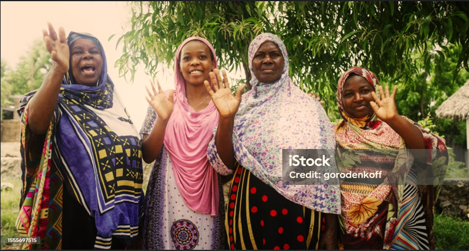
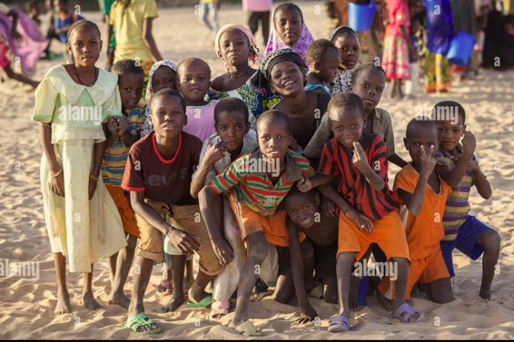
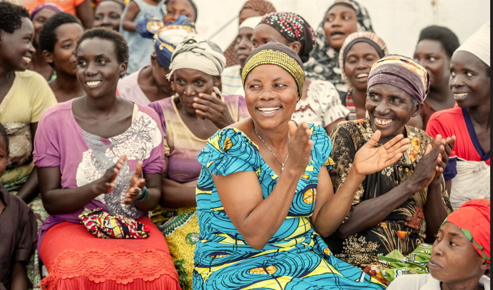

Welcome to Community Movement
CM is a vibrant non-profit organization that aims to encourage growth and development in the community. Our principal mission centers are built upon three key pillars:
- Pillar 1: Community Engagement
- Pillar 2: Sustainable Development
- Pillar 3: Education & Empowerment
Supporting Widowers
The loss of a partner can be a great tragedy for women, as it is an incredibly challenging experience both emotionally and economically. CM extends its assistance to widowers by offering counseling and community networks that enable them to navigate the transition and hardships of life. By fostering resilience and promoting self-reliance, we aim to ensure that no one has to face these challenges alone.
Educating Orphanage Non-Schooling Children
Education is a key tool to uproot poverty and create a brighter future for this generation. We are committed to providing educational opportunities for orphaned and non-schooling children. Our agendas are designed to give hope, foster creativity, train children with high-quality skills, and pave pathways to their dreams through quality education. Educational materials will also be provided.
Empowering Women in Business
We strongly believe that women are prominent and play key roles in our community. It says a community without women is a house without a foundation. When women suffer, the community deteriorates and there's no hope for tomorrow. However, when they thrive, the community flourishes. CM is dedicated to financing women with the resources, skills, and opportunities they need to succeed in the business world. Through workshops, mentorship, and networking events, we strive to cultivate a robust support system for aspiring and established female entrepreneurs.
